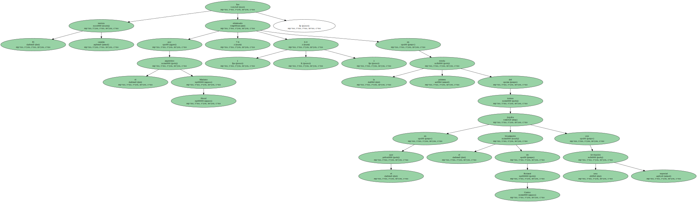
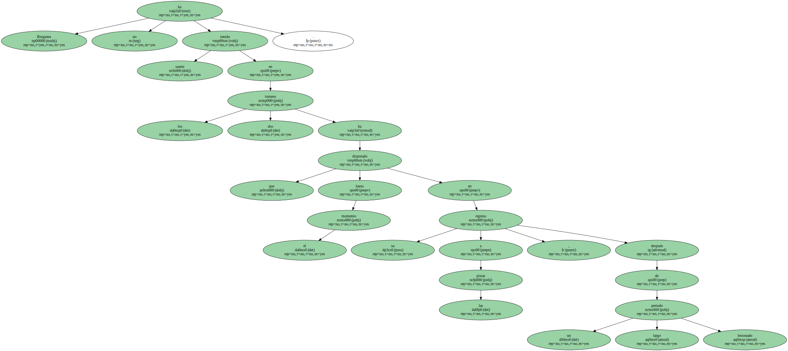
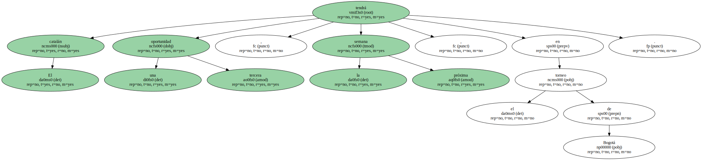

Bruguera pierde en Santiago de Chile.

El tenista catalán fue eliminado por el argentino Mariano Hood ( 7-6 , 6-4 ) en la primera ronda del torneo en el que el bicampeón de Roland Garros jugaba con una invitación especial.
Bruguera no ha tenido suerte en los dos torneos que ha disputado hasta el momento en su regreso a las pistas , después de un largo periodo lesionado.
El catalán tendrá una tercera oportunidad , la próxima semana , en el torneo de Bogotá.
